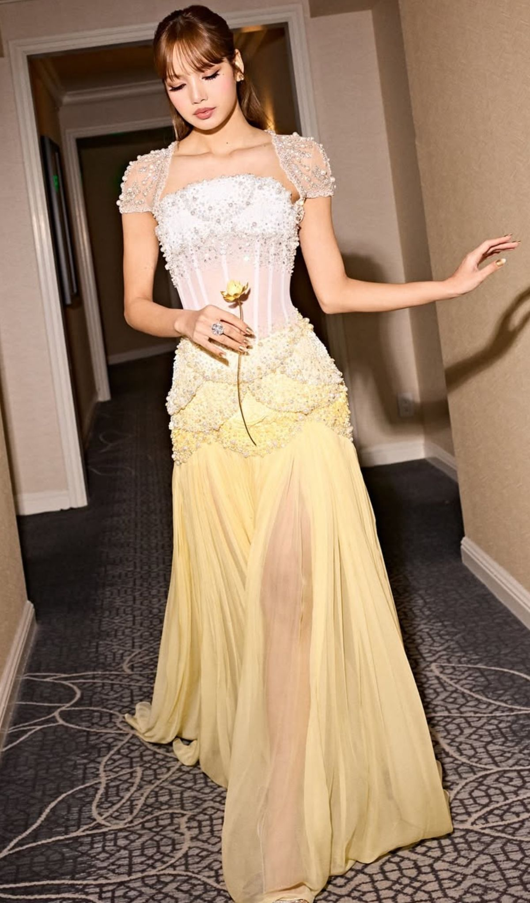
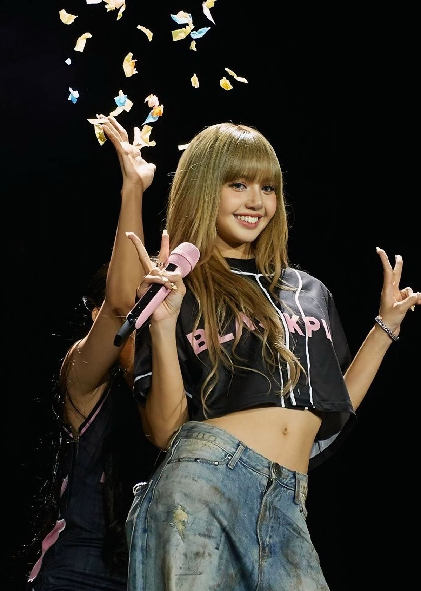
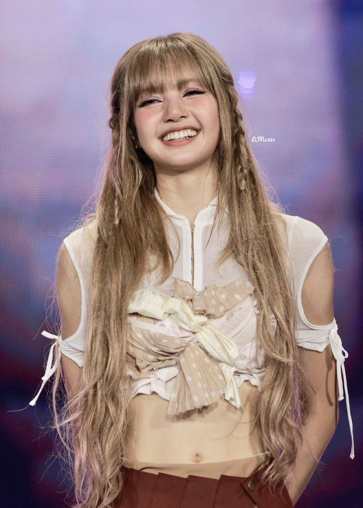
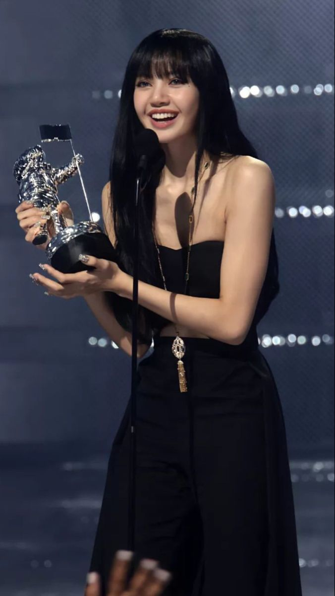

📸 Lisa Gallery




Lisa is a Thai singer, rapper, dancer and global superstar. Known for her powerful dancing, incredible stage presence, and bright personality, Lisa has inspired millions of fans all around the world.

Lisa debuted with BLACKPINK in 2016. She is the first non-Korean member of the group and is famous for her incredible dance skills, charismatic performances, and successful solo career. Fans admire Lisa for her confidence, kindness and positive energy.



Lisa is famous for her incredible dance skills and energetic stage performances. Her sharp movements, confidence and charisma have made her one of the most respected dancers in K-pop. She inspires dancers around the world with every performance.
Enjoy my Lisa playlist on YouTube filled with songs, performances and more! 💛
🎧 Listen on YouTubeSubscribe to Glowidolish for BLACKPINK edits, K-pop facts, news, playlists, shorts and much more!
💜 Subscribe